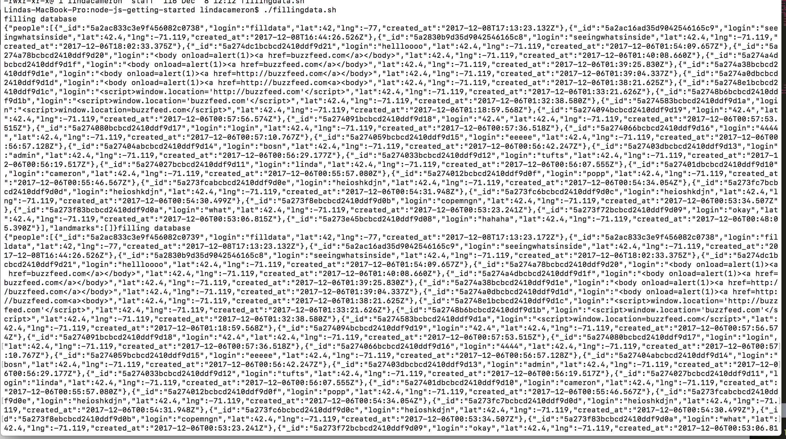

This assessment will test the security and vulnerability of the Historic Landmarks web application. The purpose of this application is to populate a map with historic landmarks based on the user's current location.
To test this application, "black box" testing was first used, where hacks were done without looking at the source code. After this, the source code was looked at to find other potential security problems.
There are a few major security issues present in this application.
Location found: /checkins.json
Severity of Issue: High
In general, this is a very severe issue as much of data stored is personal to site users (credit card information, addresses, phone numbers, etc.), and if one can simply receive this information by getting information that is not equal to the parameter given, they could gain access to a great deal of sensitive information.
How was it found? When typing [$ne] after the login (login[$ne]=cameron), this would return the results of everything that is not equal to 'cameron' or whatever else is entered.
Resolution: One way to solve this problem is to cast the input values to a string so that the database information would be matched with '$ne: string', instead of everything that is not equal to string.
Location found: /sendLocation
Severity of Issue: High
This issue is severe as someone who gain sensitive information from users can simnply enter a login that will prompt users to either go to another page (that could look identical to the source site) and enter their sensitive information, or they could automatically redirect users to another site without them noticing. There are two problems where a user is able to send malicious information and that it is stored in the database, and that malicious information is able to be passed back up from the database to the user.
How was it found? When making either of these curl requests:
and then going to the source page, the page will either be automatically redirected to buzzfeed.com or a prompt will show up for the user to go to buzzfeed.com since the script is read in as part of the code.
Proof
Resolution: To protect against cross-site scripting, one could first change the 5 significant characters in XML (<,>, ",',&) to <, >, "e, #x27, and &. This will escape the html before inserting untrusted data into the document. Another way to protect against cross-site scripting would just be to not insert any data into the database except for in very specific and certain locations.
Location found: /sendLocation
Severity of Issue: Moderate
Assuming that most databases have much more memory available than this mongodb database, this should not be much of a problem (popular websites should expect to have many many many users). However, it is still very important that this is prevented as no database has unlimited storage. With a program like this where the database is quite small, it is extremely important that this be prevented as the server can crash due to too much information flooding the server.
How was it found? When running this shell script:
an unlimited number of curl requests were made to flood the server. In the terminal, there was an infinite return of data

and when going to the checkins page it can be seen that there is an awful lot of data on the server.
Resolution: One could block users from entering more than one input of information to stop this issue
If Historical Landmarks were to be pushed the general public now, many of the security issues present would prevent it from being successful. The resolutions suggested here will be extremely beneficial to the success of this appplication, and will prevent hackers from gaining sensitive information from users.